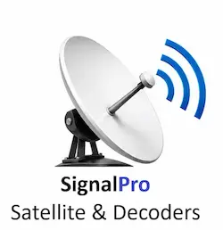
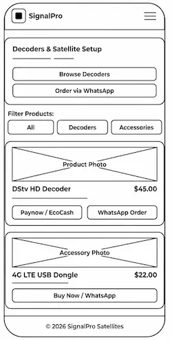
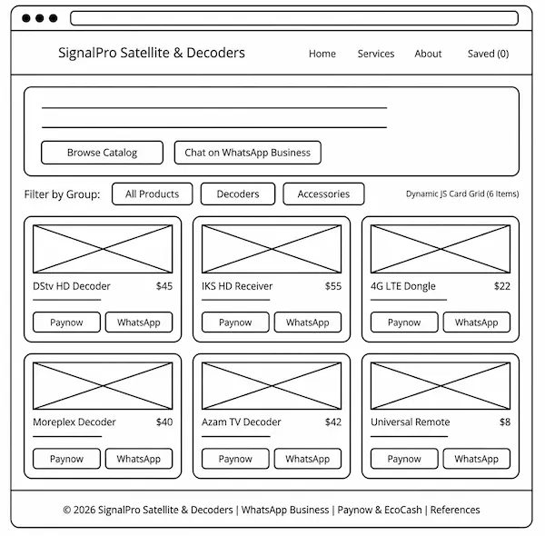

#0B1F3A
16.52:1 Contrast (AAA)
Primary: Deep Signal Navy
Usage: Site header, footer, primary headings (<h1>,
<h2>), and primary action buttons.

WDD 131 • W05 Website Planning Document
Selected Site Name: SignalPro Satellite & Decoders
Reason for Selection: The name clearly communicates the two core pillars of the business—reliable satellite television signal installations (SignalPro) and hardware retail covering decoders and accessories (Satellite & Decoders). It is memorable, builds immediate technical trust with home and commercial customers, and scales cleanly across web headers, social media, and WhatsApp Business profiles.
The purpose of SignalPro Satellite & Decoders is to provide a centralized, mobile-friendly digital storefront and service hub for customers seeking satellite television equipment and installation support. Specifically, the website will:
The following visitor scenarios represent real questions asked by prospective hardware buyers and installation clients, guiding the content and interactive controls across the site:
This palette balances technical authority with clean, high-legibility contrast. Every foreground and background pairing has been verified against WCAG 2.1 Level AAA standards (≥ 7.0:1 contrast ratio) and is actively applied throughout this planning document.
Usage: Site header, footer, primary headings (<h1>,
<h2>), and primary action buttons.
Usage: Subheadings (<h3>), active category filter
buttons, logo
badge, and section accents.
Usage: Price highlights, category badges, call-to-action highlights, and interactive focus borders.
Usage: #F8FAFC page canvas, #FFFFFF content cards,
and
#1E293B charcoal body text.
Two complementary Google Fonts are paired for crisp hierarchy across mobile and desktop screens, and both are loaded and applied directly on this document:
Applied To: Site brand title, navigation links, section headings
(<h1>–<h3>), product card titles, and button labels.
ABCDEFGHIJKLMNOPQRSTUVWXYZ • 0123456789
Applied To: Body paragraphs, product descriptions, technical specifications, scenario lists, form labels, and footer text.
Clean, high x-height letterforms ensure effortless reading on mobile screens.
The wireframes below illustrate the responsive layout structure for the home page
(index.html) across mobile (375px) and desktop (1200px+) viewports.

